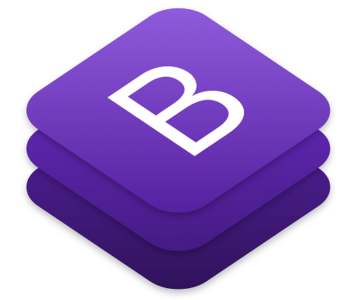

Bootstrap is a free and open source front end development framework for the creation of websites and web apps. The Bootstrap framework is built on HTML, CSS, and JavaScript (JS) to facilitate the development of responsive, mobile-first sites and apps.
Responsive design makes it possible for a web page or app to detect the visitor’s screen size and orientation and automatically adapt the display accordingly; the mobile first approach assumes that smartphones, tablets and task-specific Mobile apps are employees' primary tools for getting work done and addresses the requirements of those technologies in design.